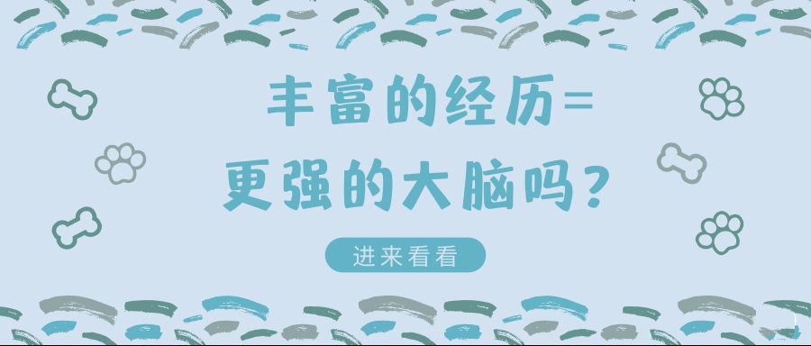

Mental health: What's normal, what's not
What's considered normal mental health? Patterns in thoughts, feelings and behaviors can suggest when to get help for yourself or someone you care about.
Essays and Stories
This part is operated by the Positive Psychology Group, the School of Philosophy, Anhui University, dedicated to popularizing scientific psychological knowledge, and at the same time building a platform for you to communicate your mind, where you can talk about your sadness and helplessness, and share your joy and rejoicing ~ I hope that in the future, we can accompany you through those good or not so good, pleasant or not so pleasant, positive or not so positive times!
热文推荐

Anger management: 10 tips to tame your temper
Keeping your temper in check can be challenging. Use simple anger management tips — from taking a timeout to using "I" statements — to stay in control.
COVID-19 and your mental health
Worries and anxiety about COVID-19 and its impact can be overwhelming. Social distancing makes it even more challenging. Learn ways to cope during this pandemic.
Want to Find Your Purpose?
Learning to ask questions of ourselves and listen to the answers can help unearth our true purpose.
Self-esteem: Take steps to feel better about yourself
Harness the power of your thoughts and beliefs to raise your self-esteem. Start with these steps.
Job burnout: How to spot it and take action
Feeling burned out at work? Find out what you can do when your job affects your health.
A Blame-Free Way to Reach an Emotionally Unavailable Partner
Being in a relationship with a person who is emotionally unavailable can be painful and lonely. Being in a relationship with a person who is emotionally unavailable can be painful and lonely.
Forgiveness: Letting go of grudges and bitterness
Forgiveness: Letting go of grudges and bitterness

Immediate Self-Help for Depression
here are 12 simple ways to lift your mood. You may already be doing some of these things, and you certainly don’t need to be doing them all. Just try the ones that feel most natural, or that are easiest for you.
Friendships: Enrich your life and improve your health
Discover the connection between health and friendship, and how to promote and maintain healthy friendships.